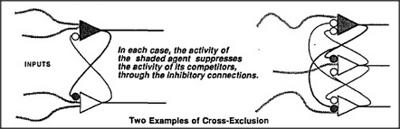

An ordinary single-bodied animal can only move in one direction at a time, and this tends to constrain it to work toward only one goal at a time. For example, when such an animal needs water urgently, its specialist for thirst takes control; however, if cold is paramount, finding warmth takes precedence. But if several urgent needs occur at once, there must be a way to select one of them. One scheme for this might use some sort of central marketplace, in which the urgencies of different goals compete and the highest bidder takes control. However, that strategy is prone to fall into a funny, fatal indecisiveness. To see the problem, imagine that our animal is both very hungry and very thirsty.
Suppose that our animal's hunger is, at first, just slightly more urgent than its thirst. So it sets out on a trek toward the North Plain, where food is usually found. When it arrives and takes
a bite of food, its thirst instantly takes precedence over its need for food!
Now that thirst has top priority, our animal sets out on the long journey toward South Lake. But once it arrives and takes one satisfying sip, the balance instantly tips back to food. Our animal is doomed to journey back and forth, getting hungrier and thirstier. Each action only equalizes ever-growing urgencies.
This would be no problem at a dinner table, where food and drink are both within easy reach. But under natural conditions, no animal could survive the waste of energy, when every minor fluctuation caused a major change in strategy. One way to manage this would be to use that marketplace infrequently — but that would make our animal less capable of dealing with emergencies. Another way is to use an arrangement called cross-exclusion, which appears in many portions of the brain. In such a system, each member of a group of agents is wired to send inhibitory signals to all the other agents of that group. This makes them competitors. When any agent of such a group is aroused, its signals tend to inhibit the others. This leads to an avalanche effect — as each competitor grows weaker, its ability to inhibit its challengers also weakens. The result is that even if the initial difference between competitors is small, the most active agent will quickly lock out all the others.
Cross-exclusion arrangements could provide a basis for the principle of noncompromise in regions of the brain where competitive mental agents lie close together. Cross-exclusion groups can also be used to construct short-term memory-units. Whenever we force one agent of such a group into activity, even for a moment, it will remain active (and the others will remain suppressed) until the situation is changed by some other strong external influence. Weaker external signals will have scarcely any effect at all because of resistance from within. Why call this a short-term memory if it can persist indefinitely? Because when it does get changed, no trace will remain of its previous state.